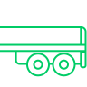
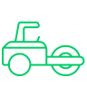
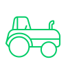
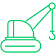
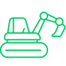
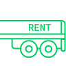

Перевозка крупногабаритных грузов
RTE Group доставит гидрогенераторы, вышки, металлоконструкции, детали промышленного оборудования и другие грузы, с которыми обычные грузовики не справятся. Здесь нужен трал с тягачом. Помимо непосредственной перевозки получим все необходимые разрешения от надзорных органов и подберем оптимальный маршрут.
Негабаритные грузоперевозки
Негабаритным называется груз, габариты которого превышают допустимые нормы для перевозки автомобильным транспортом. Такая доставка требует тщательного планирования, поскольку «негабарит» создает дополнительные трудности всем участникам движения. Плюс, особо тяжелые конструкции оказывают высокое давление на дорожное полотно. RTE Group учтет все нюансы: организуем негабаритные грузоперевозки «под ключ».

Услуги трала
Предоставим полностью укомплектованный новый трал 2022-2023 года выпуска, сразу готовый к рейсу. Услуга подойдет тем, кому необходима специальная транспортировочная техника на определенное количество часов или дней. Например, для перевозки негабаритных грузов по разным маршрутам. Ставка фиксированная, предоставляются скидки за объем.

Перевозка дорожной техники
Мы предоставляем услуги по перевозке дорожной техники любых размеров и веса. Специализированный подход и качественное оборудование гарантируют надежность и эффективность на каждом этапе перевозки.
Перевозка строительной техники
Перевезем технику для строительной площадки любых масштабов: экскаваторы, краны, грузовики, самосвалы, самоходное оборудование, гусеничные, колесные и рельсовые машины. В зависимости от габаритов подберем трал, разработаем маршрут, запросим в компетентных органах специальное разрешение на негабаритные грузоперевозки и оплатим госпошлину. Гарантируем соблюдение сроков.

Перевозка сельхоз техники
Плуг, культиватор, сеялка, комбайн, косилка, опрыскиватель, поливные и зерноочистительные машины — доставляем на поле все виды сельскохозяйственной техники вне зависимости от габаритов и массы. Простой алгоритм работы для заказчика: достаточно передать оборудование нам и получить его в конечной точке. Все промежуточные этапы и риски RTE Group берет на себя.

Перевозка крана
Перевозим мостовые, стреловые, козловые, портальные краны и краны-балки, в том числе на рельсовом или гусеничном ходу. Применяем низкорамные телескопические прицепы, подстраивающиеся под габариты конкретной модели техники. Проводим тщательную предрейсовую подготовку крана, чтобы уменьшить до нуля вероятность его повреждения в пути.

Перевозка экскаватора
RTE Group доставит на строительную площадку одноковшовые и многоковшовые экскаваторы любой размерной группы — от первой (до 6,3 тонны) до шестой (до 71 тонны). Используемые тралы позволяют закрепить даже крупногабаритные подземные экскаваторы и тяжелые гидравлические машины для добычи угля. Благодаря RTE Group можно не переживать о сохранности дорогостоящего оборудования.

Аренда трала
Если у вас есть опытный персонал, но не хватает специальной техники, предлагаем арендовать трал по фиксированным тарифам. Это выгодно, когда машина не нужна на постоянной основе — вы оплачиваете только конкретный срок аренды. RTE Group дает стопроцентную гарантию на исправность каждого трала, их своевременное обслуживание по регламентам производителя и полную комплектацию.
Отзывы клиентов
КП
Константин Петров
Очень приятно работать с этой компанией профессионалов. Все очень организованно от загрузки до выгрузки, оплата без проблем, в общем от работы только положительные эмоции. Рекомендую, а компании желаю успехов и процветания. Отдельное спасибо Андрею!
КП
Константин Петров
Очень приятно работать с этой компанией профессионалов. Все очень организованно от загрузки до выгрузки, оплата без проблем, в общем от работы только положительные эмоции. Рекомендую, а компании желаю успехов и процветания. Отдельное спасибо Андрею!
КП
Константин Петров
Очень приятно работать с этой компанией профессионалов. Все очень организованно от загрузки до выгрузки, оплата без проблем, в общем от работы только положительные эмоции. Рекомендую, а компании желаю успехов и процветания. Отдельное спасибо Андрею!